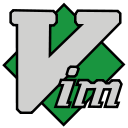

Learning Vim: Beginner advice and lessons learned
by Vasyl Nakvasiuk, 2016
@vaxxxa

Vim
(Bram Moolenaar 1991)
Why Vim?
Highly customizable
Runs everywhere
Try something new
Investing in yourself
Feel quite at home
Have fun
Vim modes
Normal mode
Insert mode
Visual mode
Yummy features
Operator + Text object
The DOT command
Operators
- d – delete (also cut)
- c – change (delete, then place in insert mode)
- y – yank (copy)
- v – visually select
Text object
Text object prefix
- a – select "a"n object
- i – select an "inner" object
Text object
Object
To open Chrome DevTools, use Ctrl+Shift+
I (or Cmd+Opt+I on Mac).
- w – word
- W – WORD
- s – sentence
- p – paragraph
- ] [ – [] block
- ) ( b – () block
- > < – <> block
- } { B – {} block
- t – tag block
- ' " ` – quoted string
before you start, you should know
before you start, you should know
different from everything you've used before
don't start at work
don't use arrow keys
break up with your mouse
use always a better way
don't copy someone else's configuration
don't use 100500 plugins
find your vim mentor/guru/jedi
Learning Vim is
A process, not an action
Wrapping Up
The Future Is Immutable
The Future Is Distributed
The Future with Big Data
Use right tools
Don't write Django/RoR by Go/Clojure/Erlang
Links
Books:
- “Seven Concurrency Models in Seven Weeks”, 2014, by Paul Butcher
- “Communicating Sequential Processes”, 1978, C. A. R. Hoare
Other: